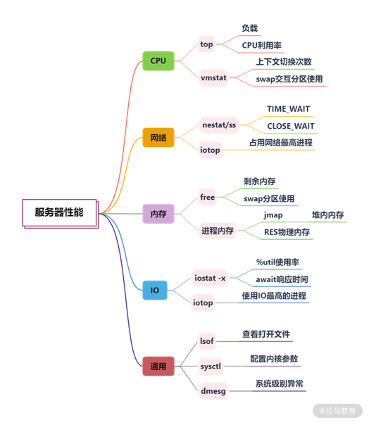
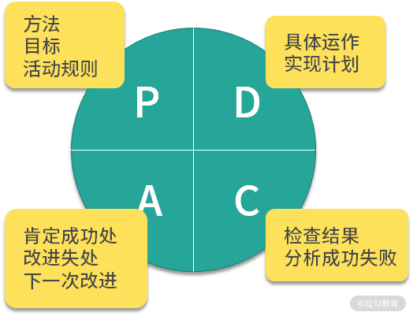
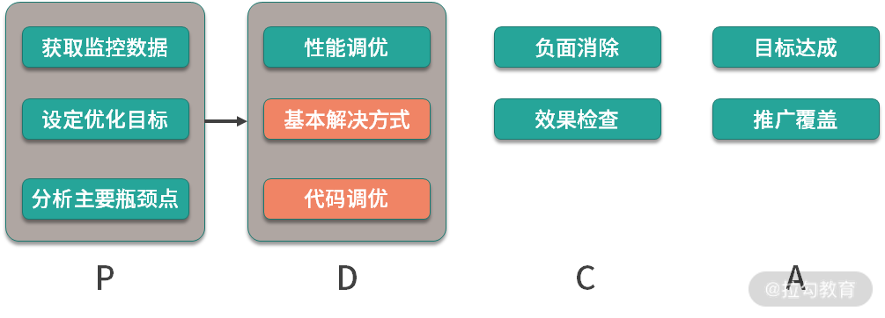

- 00 Java 性能优化，是进阶高级架构师的炼金石.md.html
- 01 理论分析：性能优化，有哪些衡量指标？需要注意什么？.md.html
- 02 理论分析：性能优化有章可循，谈谈常用的切入点.md.html
- 03 深入剖析：哪些资源，容易成为瓶颈？.md.html
- 04 工具实践：如何获取代码性能数据？.md.html
- 05 工具实践：基准测试 JMH，精确测量方法性能.md.html
- 06 案例分析：缓冲区如何让代码加速.md.html
- 07 案例分析：无处不在的缓存，高并发系统的法宝.md.html
- 08 案例分析：Redis 如何助力秒杀业务.md.html
- 09 案例分析：池化对象的应用场景.md.html
- 10 案例分析：大对象复用的目标和注意点.md.html
- 11 案例分析：如何用设计模式优化性能.md.html
- 12 案例分析：并行计算让代码“飞”起来.md.html
- 13 案例分析：多线程锁的优化.md.html
- 14 案例分析：乐观锁和无锁.md.html
- 15 案例分析：从 BIO 到 NIO，再到 AIO.md.html
- 16 案例分析：常见 Java 代码优化法则.md.html
- 17 高级进阶：JVM 如何完成垃圾回收？.md.html
- 18 高级进阶：JIT 如何影响 JVM 的性能？.md.html
- 19 高级进阶：JVM 常见优化参数.md.html
- 20 SpringBoot 服务性能优化.md.html
- 21 性能优化的过程方法与求职面经总结.md.html
- 22 结束语 实践出真知.md.html
- 捐赠
21 性能优化的过程方法与求职面经总结
经过前面的学习，你可能会发现，即使熟悉了开发中的各项技术和优化技巧，但在真正的性能优化场景下，自己依旧很难开展优化任务。其实这是因为你脑海里的知识杂乱无章，仅能靠回忆仅能完成片面的优化。
这时我通常都会在手边准备一份详细的提纲，这样在性能优化的时候，能够为我指明方向，并以完整的思维方式进行思考。
所以，今天我想向你总结一下性能优化的过程方法，希望能够在你进行性能分析，却没有头绪时也为你提供指引。
性能优化需要多方面权衡
应用性能低，有很多方面的因素，比如业务需求层面、架构设计层面、硬件/软件层面等，我们的专栏关注的主要是软件层面，但也不要忘记性能优化还有其他手段。
先举个业务需求层面的例子。有一个报表业务，查询非常缓慢，有时候甚至会造成内存溢出。经过分析，发现是查询时间跨度范围太大造成的。
由于业务上的限制，我们将时间跨度缩小至 1 个月之内之后，查询速度就快了很多。
再举一个硬件层面的例子。有一个定时任务，可以算是 CPU 密集型的，每次都将 CPU 用得满满的。由于系统有架构上的硬伤，无法做到横向扩容。技术经过评估，如果改造成按照数据分片执行的模式，则需要耗费长达 1 个月的工时。
其实在这种情况下，我们通过增加硬件配置的方式，便能解决性能瓶颈问题，为业务改进赢得更多的时间。
举这两个例子的目的是想要说明，性能优化有很多优化途径，如果这个性能问题可以通过其他方式解决，那就尽量不要采用调整软件代码的方式，我们尽可能地在效果、工时、手段这三方面之间进行权衡。
如何找到优化目标？
通常，关注一个硬件资源（比如 CPU），我们主要关注以下基本要素。
- 利用率： 一般是瞬时值，属于采样范围，用来判断有没有峰值，比如 CPU 使用率。
- 饱和度： 一般指资源是否被合理利用，能否用分担更多的工作。比如，饱和度过高，新请求在特定 queue 里排队；再比如，内存利用率过低、CPU 利用率过高，就可以考虑空间换时间。
- 错误信息： 错误一般发生在问题严重的情况下，需要特别关注。
- 联想信息： 对引起的原因进行猜测，并用更多的工具验证猜想，猜测影响因素并不一定是准确的，只是帮助我们分析问题，比如系统响应慢很可能是大量使用了 SWAP 导致的。
首先，我们需要找到性能优化的目标，我们依然从 CPU、内存、网络、I/O 等层面看一下性能瓶颈可能存在的匿藏之处。
1.CPU
查看 CPU 使用可以使用 top 命令，尤其注意它的负载（load）和使用率，vmstat 命令也可以看到系统的一些运行状况，我们这里关注上下文切换和 swap 分区的使用情况。
2.内存
内存可以使用 free 命令查看，尤其关注剩余内存的大小（free）。对于 Linux 系统来说，启动之后由于各种缓存和缓冲区的原因，系统内存会被迅速占满，所以我们更加关注的是 JVM 的内存。
top 命令的 RES 列，显示的就是进程实际占用的物理内存，这个值通常比 jmap 命令获取的堆内存要大，因为它还包含大量的堆外内存空间。
3.网络
iotop 可以看到占用网络流量最高的进程；通过 netstat 命令或者 ss 命令，能够看到当前机器上的网络连接汇总。在一些较底层的优化中，会涉及针对 mtu 的网络优化。
4.I/O
通过 iostat 命令，可以查看磁盘 I/O 的使用情况，如果利用率过高，就需要从使用源头找原因；类似 iftop，iotop 可以查看占用 I/O 最多的进程，很容易可以找到优化目标。
5.通用
lsof 命令可以查看当前进程所关联的所有资源；sysctl 命令可以查看当前系统内核的配置参数； dmesg 命令可以显示系统级别的一些信息，比如被操作系统的 oom-killer 杀掉的进程就可以在这里找到。
整理了一幅脑图，可供你参考：

常用工具集合
为了找到系统的问题，我们会采用类似于神农尝百草的方式，用多个工具、多种手段获取系统的运行状况。
1.信息收集
nmon 是一个可以输出系统整体性能数据的命令行工具，应用较为广泛。
jvisualvm 和 jmc，都是用来获取 Java 应用性能数据的工具。由于它们是 UI 工具，应用需要开启 JMX 端口才能够被远程连接。
2.监控
像 top 这样的命令，只在问题发生的时候才会有作用。但很多时候，当发生性能问题时，我们并不在电脑旁边，这就需要有一套工具，定期抓取这些性能数据。通过监控系统，能够获取监控指标的历史时序，通过分析指标趋势，可估算性能瓶颈点，从数据上支撑我们的分析。
目前最流行的组合是 prometheus + grafana + telegraf，可以搭功能强大的监控平台。
3.压测工具
有时候，我们需要评估系统在一定并发量下面的性能，这时候就可以通过压测工具给予系统一些压力。
wrk 是一个命令行工具，可以对 HTTP 接口进行压测；jmeter 是较为专业的压测工具，可以生成压测报告。压测工具配合监控工具，可以正确评估系统当前的性能。
4.性能深挖
大多数情况下，仅通过概括性的性能指标，我们无法知晓性能瓶颈的具体细节，这就需要一些比较深入的工具进行追踪。
skywalking 可以用来分析分布式环境下的调用链问题，可以详细地看到每一步执行的耗时。但如果你没有这样的环境，就可以使用命令行工具 arthas 对方法进行 trace，最终也能够深挖找到具体的慢逻辑。
jvm-profiling-tools，可以生成火焰图，辅助我们分析问题。另外，更加底层的，针对操作系统的性能测评和调优工具，还有perf和SystemTap，感兴趣的同学可以自行研究一下。
关于工具方面的内容，你可以回顾“04 | 工具实践：如何获取代码性能数据？”和“05｜工具实践：基准测试 JMH，精确测量方法性能”进行回忆复习，我整理了一幅脑图，可供你参考。

基本解决方式
找到了具体的性能瓶颈点，就可以针对性地进行优化。
1.CPU 问题
CPU 是系统的核心资源，如果 CPU 有瓶颈，很多任务和线程就获取不到时间片，便会运行缓慢。如果此时系统的内存充足，就要考虑是否可以空间换时间，通过数据冗余和更优的算法来减少 CPU 的使用。
在 Linux 系统上，通过 top-Hp 便能容易地获取占用 CPU 最高的线程，进行针对性的优化。
资源的使用要细分，才能够进行专项优化。
我曾经碰见一个棘手的性能问题，线程都阻塞在 ForkJoin 线程池上，经过仔细排查才分析出，代码在等待耗时的 I/O 时，采用了并行流（parallelStrea）处理，但是 Java 默认的方式是所有使用并行流的地方，公用了一个通用的线程池，这个线程池的并行度只有 CPU 的两倍。所以请求量一增加，任务就会排队，造成积压。
2.内存问题
内存问题通常是 OOM 问题，可以参考“19 | 高级进阶：JVM 常见优化参数”进行优化。如果内存资源很紧张，CPU 利用率低，则可以考虑时间换空间的方式。
SWAP 分区使用硬盘来扩展可用内存的大小，但它的速度非常慢。一般在高并发的应用中，会把 SWAP 关掉，因为它很容易会引起卡顿。
3.I/O 问题
我们通常开发的业务系统，磁盘 I/O 负载都比较小，但网络 I/O 都比较繁忙。
当遇到磁盘 I/O 占用高的情况，就要考虑是否是日志打印得太多导致的。通过调整日志级别，或者清理无用的日志代码，便可缓解磁盘 I/O 的压力。
业务系统还会有大量的网络 I/O 操作，比如通过 RPC 调用一个远程的服务，我们期望使用 NIO 来减少一些无效的等待，或者使用并行来加快信息的获取。
还有一种情况，是类似于 ES 这样的数据库应用，数据写入本身，就会造成繁重的磁盘 I/O。这个时候，可以增加硬件的配置，比如换成 SSD 磁盘，或者增加新的磁盘。
数据库服务本身，也会提供非常多的参数，用来调优性能。根据“06 | 案例分析：缓冲区如何让代码加速”和“07 | 案例分析：无处不在的缓存，高并发系统的法宝”的描述，这部分的配置参数，主要影响缓冲和缓存的行为。
比如 ES 的 segment 块大小，translog 的刷新速度等，都可以被微调。举个例子，大量日志写入 ES 的时候，就可以通过增大 translog 写盘的间隔，来获得较大的性能提升。
4.网络问题
数据包在网络上传输，影响的主要因素就是结果集的大小。通过去除无用的信息，启用合理的压缩，可以获得较大的性能提升。
值得注意的是，这里的网络传输值得不仅仅是针对浏览器的，在服务间调用中也有着同样的情况。
比如，在 SpringBoot 的配置文件中，通过配置下面的参数，就可以开启 gzip。
server:
compression:
enabled: true
min-response-size: 1024
mime-types: ["text/html","application/json","application/octet-stream"
但是，这个 SpringBoot 服务，通过 Feign 接口从另外一个服务获取信息，这个结果集并没有被压缩。 可以通过替换 Feign 的底层网络工具为 OkHTTP，使用 OkHTTP 的透明压缩（默认开启 gzip），即可完成服务间调用的信息压缩，但很多同学容易忘掉这一环。我曾经调优果一个项目，将返回的数据包从9MB 压缩到300KB 左右，极大地减少了网络传输，节省了大约 500ms 的时间。
网络 I/O 的另外一个问题就是频繁的网络交互，通过将结果集合并，使用批量的方式，可以显著增加性能，但这种方式的使用场景有限，比较适合异步的任务处理。
使用 netstat 命令，或者 lsof 命令，可以获取进程所关联的，TIME_WAIT 和 CLOSE_WAIT 网络状态的数量，前者可以通过调整内核参数来解决，但后者多是应用程序的 BUG。
我整理了一幅脑图，可供你参考。

有了上面的信息收集和初步优化，我想你脑海里应该对要优化的系统已经有了非常详细的了解，是时候改变一些现有代码的设计了。
可以说如果上面的基本解决方式面向的是“面”，那么代码层面的优化，面向的就是具体的“性能瓶颈点”。
代码层面
代码层面的优化是我们课程的重点，我们花了非常大的篇幅在整个“模块三：实战案例与高频面试点”部分进行这方面的讲解，在这一课时我再简单地总结一下。
1.中间层
不同资源之间相互调用的性能瓶颈，主要在于资源的速度差异上。解决方式主要是加入一个中间层，有缓冲 / 缓存，以及池化这三种形态，以牺牲信息的时效性为代价，加快信息的处理速度。
缓冲，使得资源两方，都能按照自己的节奏进行操作的同时，也可以完全地顺序衔接起来。它能够消除两方的速度差异，以批量的方式，来减少性能损耗。
你可进入“06 | 案例分析：缓冲区如何让代码加速”进行回顾复习。
缓存，在系统中的应用非常广泛，有堆内缓存和分布式缓存之分。有些对性能要求非常高的场景，甚至会有多级缓存的组合形态。我们的目标是尽量提高缓存的命中率，以便中间层得其所用。
你可进入“07 | 案例分析：无处不在的缓存，高并发系统的法宝”进行回顾复习。
另一种中间层形态，就是对资源进行集中管控，以池化的思想来减少对象的创建成本。在对象的创建成本比较大时，才能体现到池化的价值，否则只会增加代码的复杂度。
你可进入“09 | 案例分析：池化对象的应用场景”进行回顾复习。
2.资源同步
在我们的编码中，有时候对数据的一致性要求比较高，就不得不用到锁和事务，不管是线程锁还是分布式锁，甚至是适合读多写少场景的乐观锁，都有一些通用的优化法则。
- 第一，切分冲突资源的粒度，这样就可以分而治之；
- 第二，减少资源锁定的时间，尽快释放共享资源；
- 第三，将读操作与写操作区分开，进一步减少冲突发生的可能。
普通的事务可以通过 Spring 的 @Transactional 注解简单的实现，但通常业务会涉及多个异构的资源。如无必要，非常不推荐使用分布式事务去解决，而应该采用最终一致性的思想，将互斥操作从资源层上移至业务层。
3.组织优化
另外一种有效的方式是通过重构，改变我们代码的组织结构。
通过设计模式，可以让我们的代码逻辑更加清晰，在性能优化的时候，可以直接定位到要优化的代码。我曾见过很多需要性能调优的应用代码，由于对象的关系复杂和代码组织的混乱，想要加入一个中间层是相当困难的。这个时候，首要的任务是梳理、重构这些代码，否则很难进行进一步的性能优化。
另外一个对编程模式影响较大的就是异步化。
异步化多采用生产者消费者模式，来减少同步等待造成的性能损耗，但它的编程模型难度较大，需要很多额外的工作。比如我们使用 MQ 完成了异步化，就不得不考虑消息失败、重复、死信等保障性功能（产品形态上的改变，不在讨论范围之内）。
4.资源利用不足
并不是说系统的资源利用率越低，我们的代码写得就越好。作为一个编码者，我们要想方设法压榨系统的剩余价值，让所有的资源都轮转起来。尤其在高并发场景下，这种轮转就更加重要——属于在一定压力下系统的最优状态。
资源不能合理的利用，就是一种浪费。比如，业务应用多属于 I/O 密集型业务，如果让请求都阻塞在 I/O 上，就造成了 CPU 资源的浪费。这时候使用并行，就可以在同一时刻承担更多的任务，并发量就能够增加；再比如，我们监控到 JVM 的堆空闲空间，长期处于高位，那就可以考虑加大堆内缓存的容量，或者缓冲区的容量。
我整理了一幅脑图，可供你参考。

PDCA 循环方法论
性能优化是一个循环的过程，需要根据数据反馈进行实时调整。有时候，测试结果表明，有些优化的效果并不好，就需要回滚到优化前的版本，重新寻找突破点。

如上图，PDCA 循环的方法论可以支持我们管理性能优化的过程，它有 4 个步骤：
- P（Planning）计划阶段，找出存在的性能问题，收集性能指标信息，确定要改进的目标，准备达到这些目标的具体措施；
- D（do）执行阶段，按照设计，将优化措施付诸实践；
- C（check）检查阶段，及时检查优化的效果，及时发现改进过程中的经验及问题；
- A（act）处理阶段，将成功的优化经验进行推广，由点及面进行覆盖，为负面影响提供解决方案，将错误的方法形成经验。
如此周而复始，应用的性能将会逐步提高，如下图，对于性能优化来说，就可以抽象成下面的方式。

既然叫作循环，就说明这个过程是可以重复执行的。事实上，在我们的努力下，应用性能会螺旋式上升，最终达到我们的期望。
求职面经
1. 关注“性能优化”的副作用问题
性能优化的面试题，一般都是穿插在其他题目里的。你不仅需要关注“性能优化”本身，还需关注“性能优化”之后的问题，因为等你答出面试官想要的性能优化方案之后，面试官接下来便会追问“这个方案所引起的其他问题”。
比如，当你谈到你使用缓存提高了接口的性能时，面试官会接着问你一些关于缓存同步的问题。我们专栏有大部分篇幅描述了性能引起的这些副反应，这些知识更需要你去用心掌握。
2.掌握好“性能优化”基础知识
另外，从上面的总结我们就可以看出，性能优化涉及的知识点非常多，那如何在有限的面试时间里尽量多地展现自己呢？那便是打好知识基础，能够对问题进行详细准确地作答。
- 你都对JVM做了那些优化，有哪些性能提升？
- 为什么互联网场景下通常使用乐观锁？
上述两个问题比较好回答，因为它的答案相对确定，你只需要讲清楚特定的知识点就可以了，而比较麻烦的会是下来这类题目。
3.发散、综合性题目提前准备
如果上面的题是围绕“点”，那么下面的题便是围绕一个“面”。
- 你在项目中做过哪些性能优化方面的工作？
- 你是如何指导团队做性能优化的？
如果你仅针对某个知识点进行描述，那么你的答案就显得非常单薄。其实你可以从问题发现、问题解决、问题验证等方面系统性地分别进行描述，并着重谈一下在这一过程中自己认为最重要并最熟悉的知识点。
所以，我推荐你在面试前，根据自己的项目准备一下这两类问题的现实案例（如果没有实践、合情合理的推演也是合适的），这样在碰到这样的问题时，才能够快速应对，让面试官刮目相看。
小结
本课时，我们主要对前面课时的内容进行了统一的梳理和总结，最终将性能优化总结为：找到优化目标 → 使用工具获取更多性能数据 → 性能优化的基本的解决方式 → 代码层面优化→ 过程方法，以及支持这一过程的方法论—PDCA 循环，应用性能就是靠这样一轮轮的优化，逐渐累加它的效果。
最后，又向你简单介绍了“求职面经”，希望能帮助你在职业道路上越走越远。
© 2019 - 2023 Liangliang Lee. Powered by gin and hexo-theme-book.